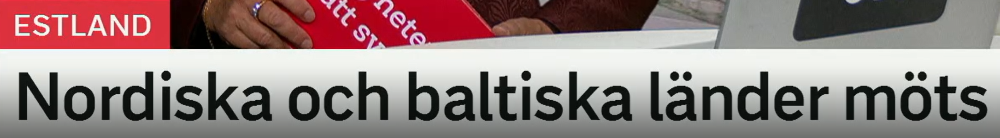
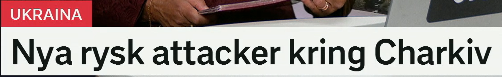
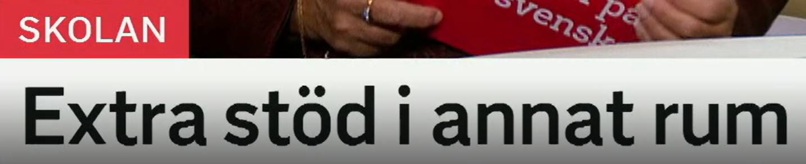
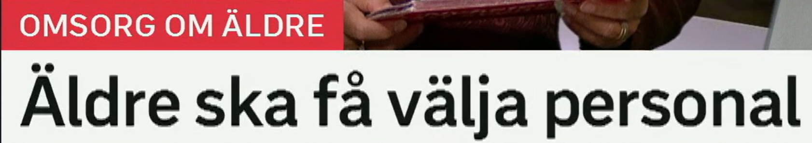
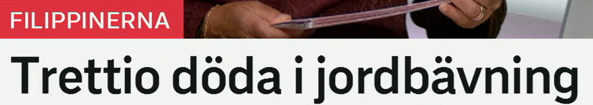
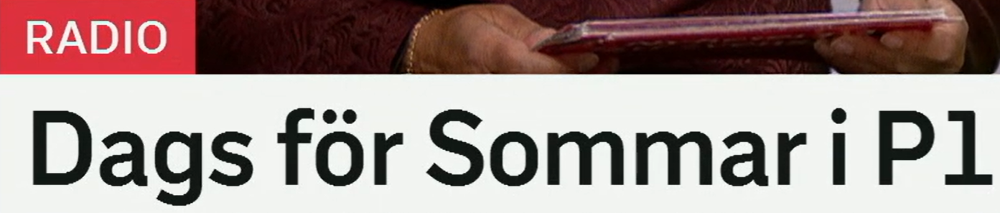

Nordiska och baltiska länder möts
北欧和波罗的海国家会面。
nordisk 表示北欧的；nordiska länder 北欧国家。常指 Sverige、Norge、Danmark、Finland、Island。
相关词：Norden 北欧，skandinavisk 斯堪的纳维亚的，nordiskt samarbete 北欧合作。
De nordiska länderna samarbetar om säkerhet. 北欧国家在安全问题上合作。
baltisk 表示波罗的海地区的；baltiska länder 通常指 Estland、Lettland、Litauen。
相关词：Baltikum 波罗的海三国，Östersjön 波罗的海，baltiskt samarbete 波罗的海地区合作。
Baltiska länder stärker sitt försvar. 波罗的海国家加强国防。
ett land 国家，复数 länder。möts 来自 möta，表示会面、相遇。
近义表达：träffas 会面，samlas 聚集，håller möte 开会，möte mellan länder 国家间会议。
Ledarna möts i Tallinn. 领导人在塔林会面。
外交标题句型
A och B länder möts = A 和 B 地区的国家会面。完整可写：Nordiska och baltiska länder möts i Estland.

Nya rysk attacker kring Charkiv
哈尔科夫周边发生新的俄罗斯袭击。
ny 新的；复数/定形是 nya。en attack 袭击，复数 attacker。
近义词：angrepp 攻击，anfall 进攻，bombningar 轰炸，drönarattacker 无人机袭击。
Nya attacker rapporterades under natten. 夜间报告了新的袭击。
rysk 俄罗斯的；复数/定形通常是 ryska。这里标题中可按“俄罗斯袭击”理解。
相关词：Ryssland 俄罗斯，ryska styrkor 俄军，rysk militär 俄罗斯军方。
Ryska attacker slog mot energinätet. 俄罗斯袭击打击了能源网。
kring 表示“围绕、在……周边”。Charkiv 是哈尔科夫的瑞典语写法。
近义表达：runt 周围，omkring 大约/周围，i närheten av 在……附近，nära 靠近。
Strider pågår kring staden. 城市周边战斗仍在进行。
地点范围
attacker kring X = X 周边的袭击。新闻里 kring 常用于城市、地区、议题周围。

Extra stöd i annat rum
在另一个房间提供额外支持。
stöd 支持、帮助；extra stöd 额外支持，常用于学校、医疗、经济政策。
近义词：hjälp 帮助，stöttning 支撑/辅导，resurs 资源，insats 措施/干预。
Elever med svårigheter får extra stöd. 有困难的学生获得额外支持。
annan 另一个；修饰 ett 词时变 annat。ett rum 是中性名词，所以是 annat rum。
近义表达：ett annat ställe 另一个地方，separat 单独的，särskild 特别的。
Lektionen hålls i ett annat rum. 课在另一个房间进行。
ett rum 房间、空间。复数可为 rum。
相关词：klassrum 教室，grupprum 小组室，utrymme 空间。
Eleven arbetar i ett lugnt rum. 学生在安静的房间里学习。
学校支持标题
Extra stöd i annat rum 省略了动词，可扩展为：Elever får extra stöd i ett annat rum.

Äldre ska få välja personal
老年人将可以选择护理人员。
äldre 本来是“更老的/年长的”，作名词时表示老年人。
近义词：gamla 老人，seniorer 老年人，pensionärer 退休者，äldre personer 老年人。
Äldre behöver trygg omsorg. 老年人需要安全的照护。
ska få 表示“将可以/将被允许”。välja 是选择。
近义表达：får möjlighet att välja 有机会选择，kan välja 可以选择，har rätt att välja 有权选择。
Patienter ska få välja vårdcentral. 病人将可以选择医疗中心。
personal 员工、工作人员，常作集合名词。养老语境里可指护理人员。
相关词：vårdpersonal 医护人员，omsorgspersonal 照护人员，anställda 员工，hemtjänst 居家护理服务。
Kommunen behöver mer personal i äldreomsorgen. 市政府需要更多养老照护人员。
福利政策句型
X ska få välja Y = X 将可以选择 Y。这个结构常用于权利、福利和服务改革。

Trettio döda i jordbävning
地震中 30 人死亡。
trettio = 30。新闻标题常把数字放在最前面，突出伤亡规模。
Trettio personer evakuerades. 30 人被疏散。
död 死亡的；复数 döda 可指死者。相关动词 dö 死亡，dödades 被杀/死亡。
相关词：omkomna 遇难者，dödsoffer 死亡受害者，skadade 伤者，saknade 失踪者。
Flera döda rapporteras efter skalvet. 地震后报告多人死亡。
en jordbävning 地震。也可说 skalv，尤其在新闻里很常见。
近义词：skalv 震动/地震，efterskalv 余震，naturkatastrof 自然灾害。
En kraftig jordbävning drabbade området. 一场强震袭击了该地区。
灾害伤亡标题
X döda i jordbävning = 地震中 X 人死亡。完整可写：Trettio personer har dött i en jordbävning.

Dags för Sommar i P1
到了《Sommar i P1》的时候。
dags för X 表示“到 X 的时候了”。也可说 det är dags att... 该做某事了。
近义表达：tid för ……的时间，nu är det tid att 现在该……，det är dags att börja 该开始了。
Det är dags för lunch. 该吃午饭了。
瑞典广播节目名，P1 是 Sveriges Radio 的频道。节目相关词：radioprogram 广播节目，programledare 主持人，lyssnare 听众。
相关词：sändning 播出，avsnitt 一集，sommarpratare 夏季节目嘉宾/讲述者。
Många lyssnar på Sommar i P1. 很多人收听《Sommar i P1》。
时间到
Dags för X 是非常口语但新闻标题也爱用的结构：Dags för val 该选举了，Dags för final 到决赛了。
复习表：重点词 + 近义词 + 高频用法
| 关键词 | 近义/相关词 | 高频搭配 |
|---|---|---|
| möts | träffas, samlas, håller möte, förhandlar | länder möts, ledare möts, möts i Estland |
| kring | runt, omkring, i närheten av, nära | kring Charkiv, kring frågan, kring staden |
| stöd | hjälp, stöttning, resurs, insats | extra stöd, få stöd, stöd i skolan |
| välja | välja ut, bestämma, ha rätt att välja | få välja personal, välja skola, välja vårdcentral |
| jordbävning | skalv, efterskalv, naturkatastrof | döda i jordbävning, kraftig jordbävning, drabbas av skalv |
| dags för | tid för, det är dags att, nu börjar | dags för Sommar, dags för lunch, dags för final |
练习 1
把“领导人在爱沙尼亚会面”译成瑞典语。提示：Ledarna möts i Estland.
练习 2
说“学校提供额外支持”。提示：Skolan ger extra stöd.
练习 3
用 ska få välja 写“病人将可以选择医生”。提示：Patienter ska få välja läkare.
练习 4
把“该吃午饭了”译成瑞典语。提示：Det är dags för lunch.